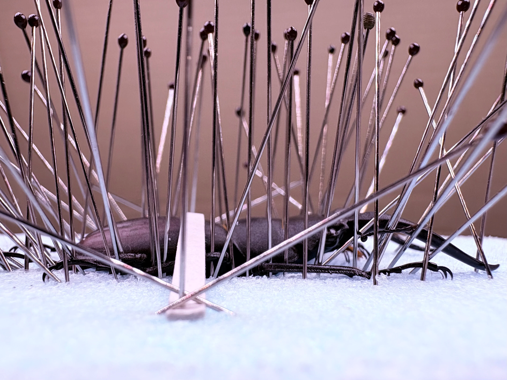

標本を作る目的
標本には、姿や色を楽しむ、体の構造を観察する、採集の記録を残すなど、さまざまな役割があります。
左右を揃えて形の美しさを見せる場合もあれば、動きのある姿勢に整える場合もあります。何を見せたいか、どのように残したいかによって、仕上げ方を考えます。
作業中に、配置と見せ方を考える
この章は、「はじめてつくる」で脚や触角を整えている途中に読む補足です。必要な項目だけ読み、作業へ戻ります。
作業する場所と、見せる向き
足や触角を整えるための場所に加え、ピンセットを動かす余裕があると、ほかの部分に触れずに作業しやすくなります。完成したときに見せたい向きも、配置を考える手掛かりになります。
固定が果たす役割
胴体が安定していると、関節を動かす操作と、体全体がずれる動きを区別しやすくなります。ずれるときは、さらに力を加える前に、固定の状態を見直します。
足の広がりと重なり
足の開き具合や重なり方によって、標本の印象や各部の見え方が変わります。足を広げると節の形が見えやすくなる一方、広げ方によっては全体が間延びして見えることもあります。
見せたい部分と全体のバランスを見ながら調整します。一本ずつ整えるか、全体に少しずつ手を入れるかは、作業しやすさに合わせて選べます。
触角の形を見せる
触角には、種類ごとの特徴が表れます。長さだけでなく、節の太さや先端の形、頭との位置関係も見せ方の手掛かりになります。
付け根に近い部分をそっと支え、向きと高さを少しずつ整えます。細かな節の並びを見ながら、ほかの脚や触角と重ならない位置を探します。動きにくいときは、軟化の状態を確認します。
少し離れて、別の向きから見る
作業中は一つの部分に目が向きやすいため、ときどき少し離れて全体を眺めます。上からの印象に加え、横から見た足の高さや重なりも確かめると、配置を検討しやすくなります。

配置を見直したら、「ぐるっと見てみよう」へ戻って、全体を確かめます。
観察して比べる
完成した標本は、姿や色を楽しみながら、細部まで観察できます。気になった部分に注目し、形や構造を確かめます。
- 前脚・中脚・後脚（前・真ん中・後ろの足）の形の違い
- 触角の付け根の位置と、節の形
- 頭・胸・腹の区切り
- 背中や足の模様と質感
同じ種類の別個体や、異なる種類の標本と見比べると、共通点や違いを探せます。手元に標本が一つしかない場合は、写真とも比較できます。
比較する部分を決めると違いを捉えやすくなります。ただし、写真の角度や光の当たり方でも色や形の印象は変わるので、見え方の違いと個体の違いを分けて考えます。
次の制作に生かす
完成した標本を見直し、気に入った点と、次に変えてみたい点を整理します。「足の角度を変えると形がよく見える」「触角の位置を変えると全体がまとまる」といった気づきは、制作技術を高める手掛かりになります。
作業途中の写真があれば、配置による見え方の違いも比較できます。乾燥した標本をすぐに作り直さなくても、次の制作で試す工夫として記録できます。